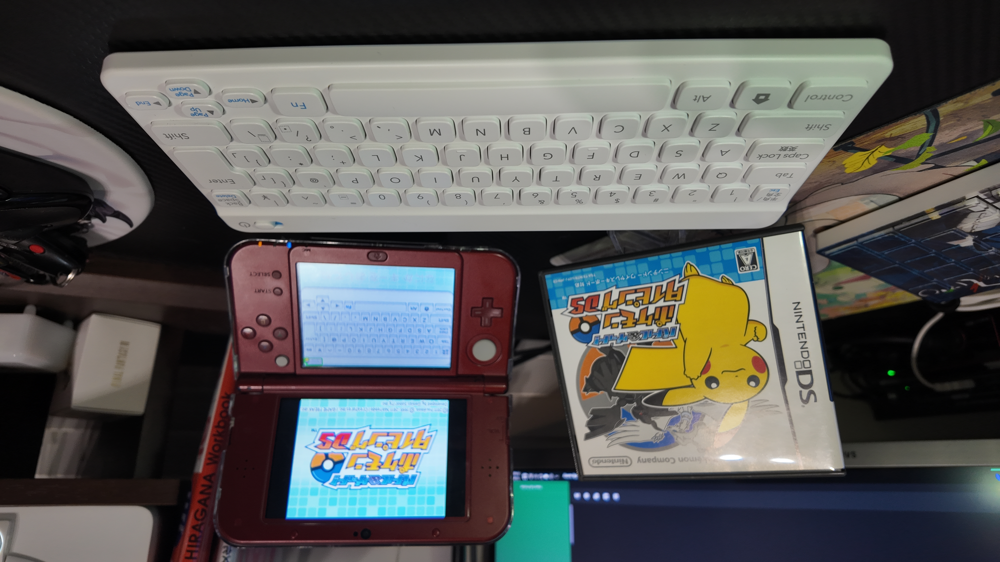

1game1week - Week 30 (7/24/25) - Battle and Get! Pokemon Typing DS
Hey all! It's week 30! (7/23 -> 7/30)
No life updates or random yapping. Drinking while typing, so hopefully it's fine.
Anyways!
New games from 7/16 -> 7/22:
None! (Two week streak, total 8)
Currently, my backlog is at +13 (lower is better, -1 from last week).
And onto 1g1w. Once again, a game is considered "beaten" if I've accomplished the main objective of the game.
GAME: Battle and Get! Pokemon Typing DS
PLATFORM: Nintendo DS
GENRE: Typing
STARTED ON: 7/14
BEATEN ON: 7/14
TOTAL PLAYTIME: 3 hours and 19 minutes (tracked via 3DS Activity Log)
I know what you're thinking... "isn't it a little lame to play a typing game?"
Yeah. But it was cool nonetheless.
The last few weeks, I've mentioned that I started Japanese classes. While it's something I already know, part of the "practice on your own" thing was essentially to learn to recognize and type hiragana.
I mean, it's not like I really needed it. I've been able to for a few years now. But it's nice to reinforce, isn't it?
This game's interesting. Never released in North America, but it actually was localized and released in Europe. Unfortunately only able to really be played via the original cartridge, so it's not like it can be used in an R4 or something similar.
Original cartridge is needed because it's one of (if not the only) DS cartridge with a Bluetooth module, which was used for the sake of connecting to a wireless Bluetooth keyboard peripheral.
Really... I can't tell if it's super cool or just a tad silly. It's probably a combination of the two.
I'm playing a Japanese copy. Due to this, the names of all the Pokemon I know by heart are different and it threw me off so much.
Though, something really interesting is that it picked up alternate spellings for various things. For example, Pichu is ぴ (pi) ちゅ (chu). But since 'tyu' also comes out as ちゅ (chu), it's a valid spelling. So "Pityu" worked just fine.
I tried to look at the hiragana for the most part, but when "Pityu" came up as the romanji suggestion, it gave me a moment of pause to gather myself. It's perfectly valid, it's just... you get it.
This might sound silly, but it was actually slightly challenging trying to get "good" scores. The game expects you to start pretyping the moment you see the mon, and to type its name as fast as you could. Given the fact I knew very few names in JP, it got pretty challenging for a while.

Thanks for reading! If you need to contact me for any reason, please feel free to email me at aru@hoshikawa-aru.com.